Two asks from the owner, 26 September, round DR. Every picture here is the committed build with the proposal laid over it, on James with his five story lines, so his blueprint domain (Imperium) is selected and the Architect root is washed.
"I need icons for Architect, Engine, Weaver, Witness, I don't know why those don't have icons."
Each glyph is drawn from the root's own sentence in the product and from the domains it holds, not from what the word sounds like. Same grammar as every family already in the build: 24 unit box, open stroke, round ends, no fill. Each was checked beside all 86 named glyphs the build already draws, so no new mark is a second name for an old one.
Product says "Earth, fixed. Builds and holds." Holds Knowledge, Justice, Imperium, Duty, Fate. The instrument order is drawn with, before anything is built.
Product says "Fire, cardinal. Initiates and burns." Holds Power, Creation, Dissolution, Descent, Death. A flame is the one thing that both starts and consumes.
Product says "Water, mutable. Joins and dissolves." Holds Connection, Exchange, Restoration, Provision, Play. Two streams meet and run on as one.
Product says "Air. Observes and names." Holds Nature, Trickster, Mystery, Guardian. The frame holds the thing and never touches it. The eye was taken twice already.
In the rail the mark sits above the name. Four across leaves each chip about 62 pixels, and "Architect" already takes about 50 of them, so a mark beside the name does not fit, and a mark instead of the name loses the only place the roots are named. It costs 8 pixels of rail height.
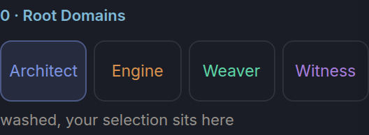
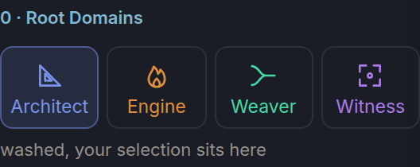
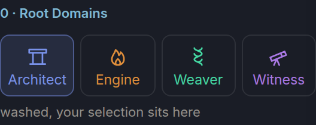
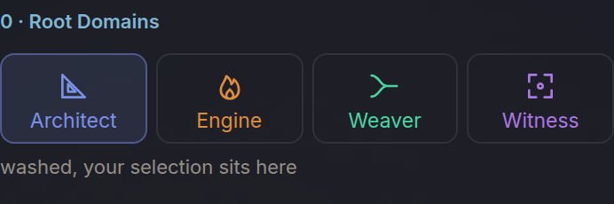
"All our normal icons under Blueprint Domains, Primary, I think we want those punched up a little more, more saturated, they're just a little dull."
He is right, and it measures. The main cause is not the palette. Every icon in these grids rests at 78 percent opacity and only reaches full strength under a pointer, so each stroke is mixed 22 percent into its dark tile. That lowers saturation and contrast together. On Dark the nineteen domain colours carry 0.125 chroma in the palette and 0.103 on screen.
So the options separate the dimming from the colour. A only removes the dimming. B and C also raise saturation by 15 and 30 percent, with hue and lightness held.
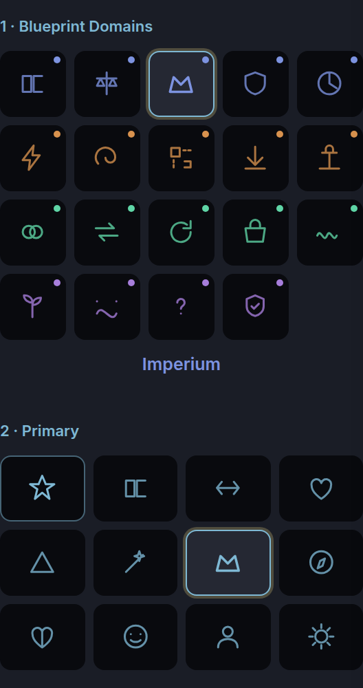
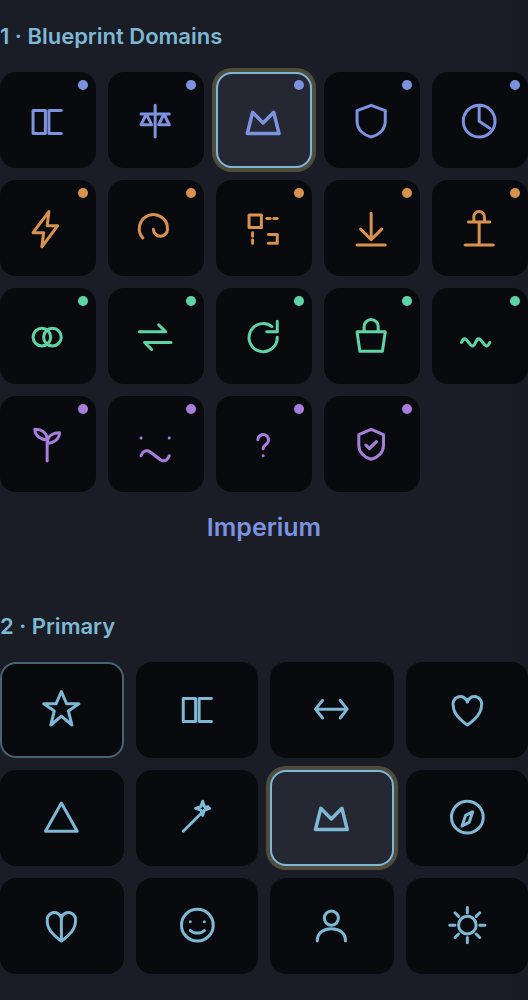
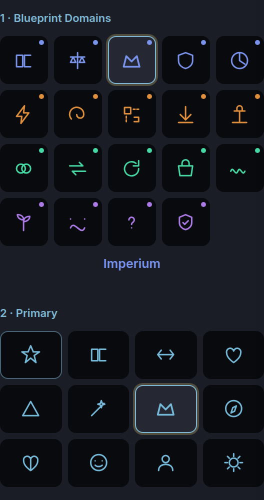
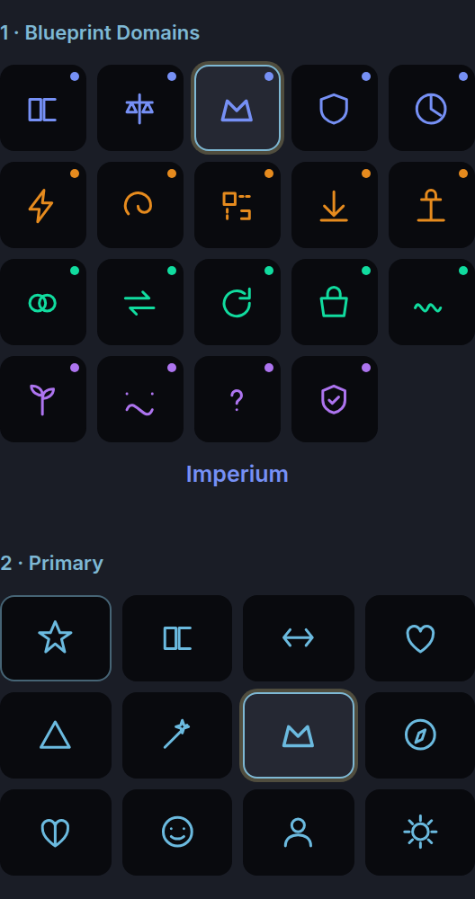
All twelve archetypes are drawn in the one accent blue, the least saturated colour in the rail at 0.072. On 19 September he ruled that each archetype wears its seat ("the warrior's root, the sage is crown, the mage is third eye"). That was applied to the reading rows but never reached these tiles. With it applied, Primary gains more saturation than any multiplier gives it.
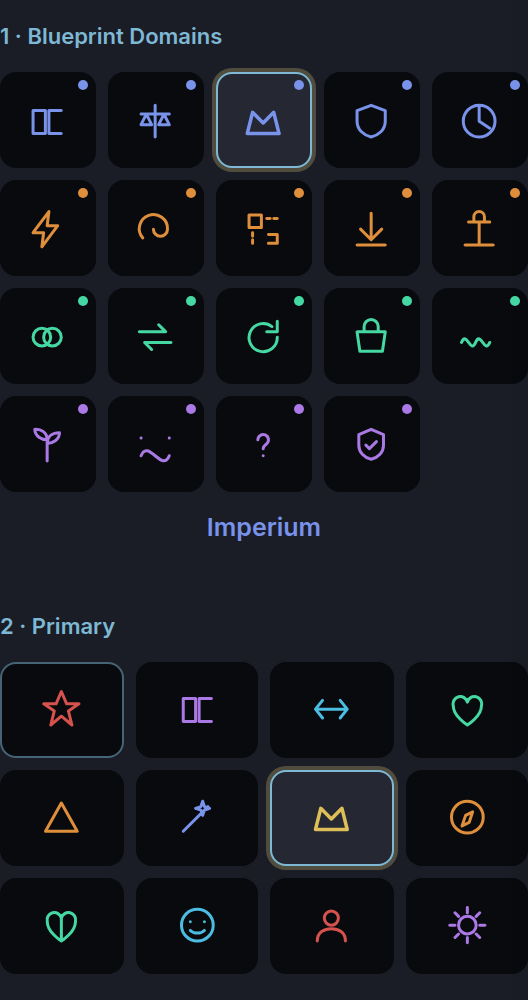
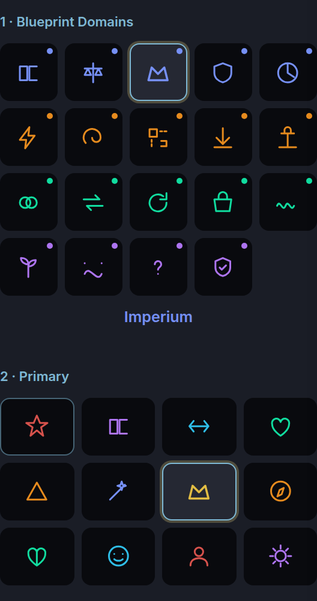
| Dark lighting | Shipped | A | B | C |
|---|---|---|---|---|
| Blueprint domains, average chroma on screen | 0.103 | 0.126 | 0.144 | 0.163 |
| Blueprint domains, weakest contrast (Nature) | 4.18 | 6.27 | 6.20 | 6.14 |
| Primary in one accent, average chroma | 0.060 | 0.072 | 0.083 | 0.094 |
| Primary wearing seats, average chroma | n/a | 0.126 | 0.142 | 0.158 |
| Primary wearing seats, weakest contrast (Everyman) | n/a | 4.87 | 4.87 | 4.87 |
| Root names, text, weakest contrast (floor 4.5) | 4.68 | 4.68 | 4.68 | 4.66 |
Root is held at its shipped value on every option. Red is the alarm colour, kept for something going wrong, and raising saturation walks the Root seat toward it. Measured as colour distance from the alarm (#FF2E1F, in the OKLab colour model): 0.082 as shipped, 0.060 at plus 15, 0.043 at plus 30. Root is already the most saturated seat. In this rail it only touches Warrior and Everyman.
The blueprint domain colours are written once, as the Dark palette, and drawn unchanged on every lighting. On paper that is pale on pale. Snow draws Connection at 1.34 to 1, where the floor for an icon a person needs to read is 3 to 1. The root names on Snow are text at 1.70 to 1, against a text floor of 4.5. Glass white has the same fault, plus a second one. The function that picks a colour per lighting treats Glass white as dark.
Every option routes the domains through the lighting's own palette. On Dark nothing changes. On paper it is the fix.
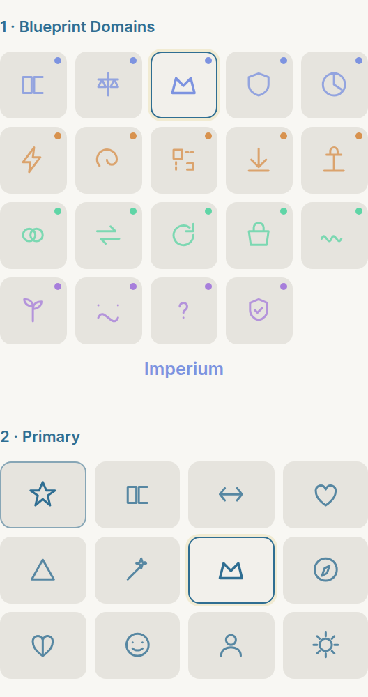
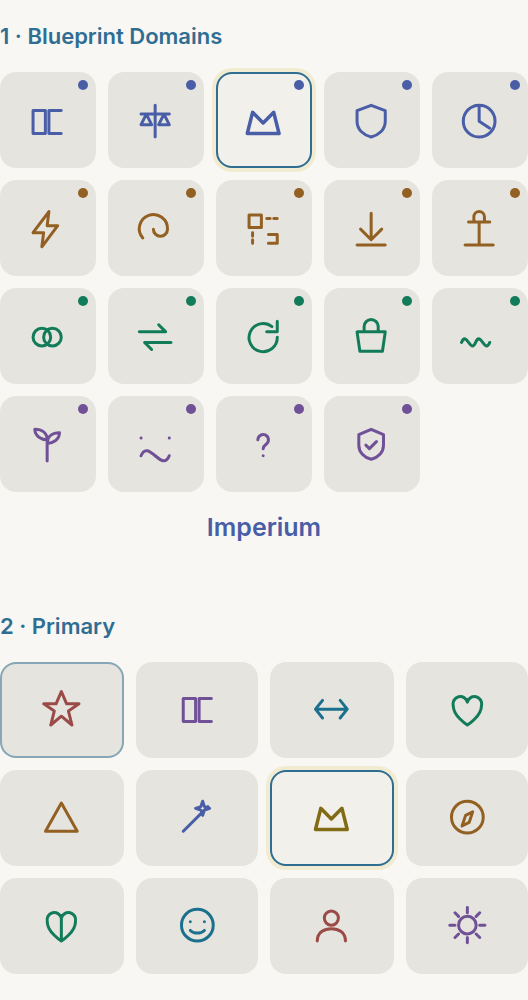
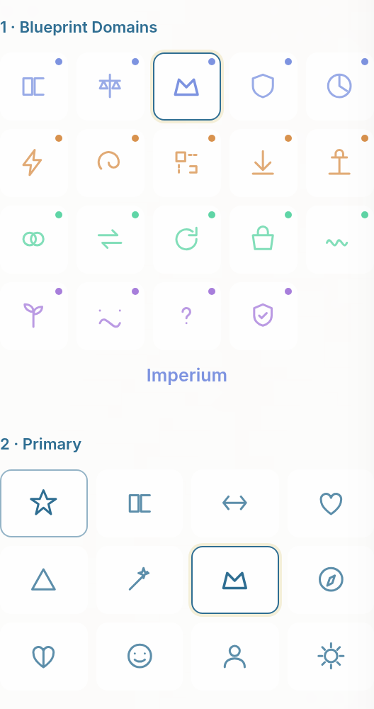
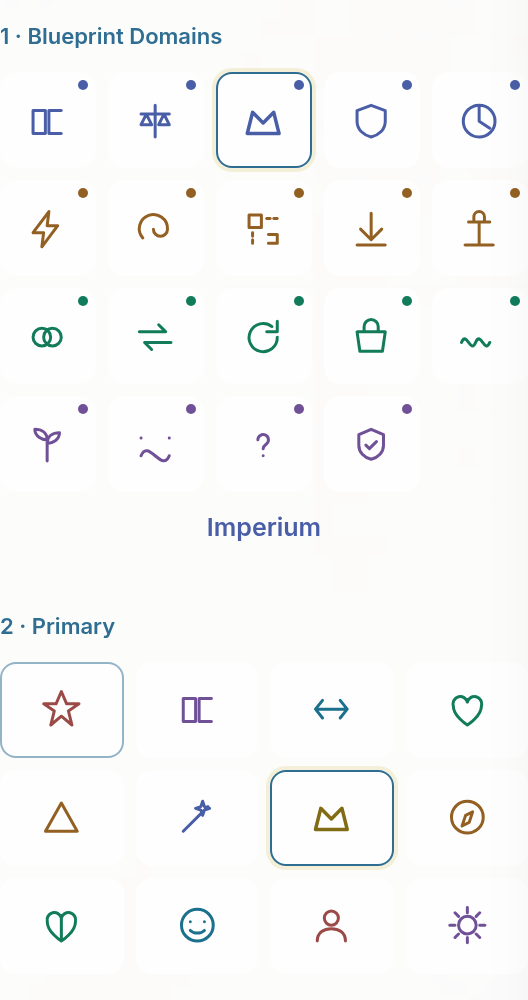
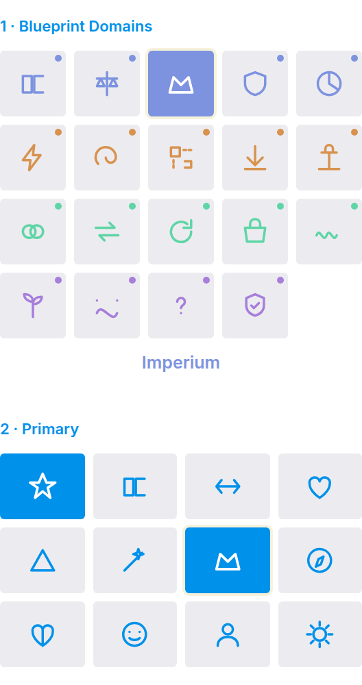
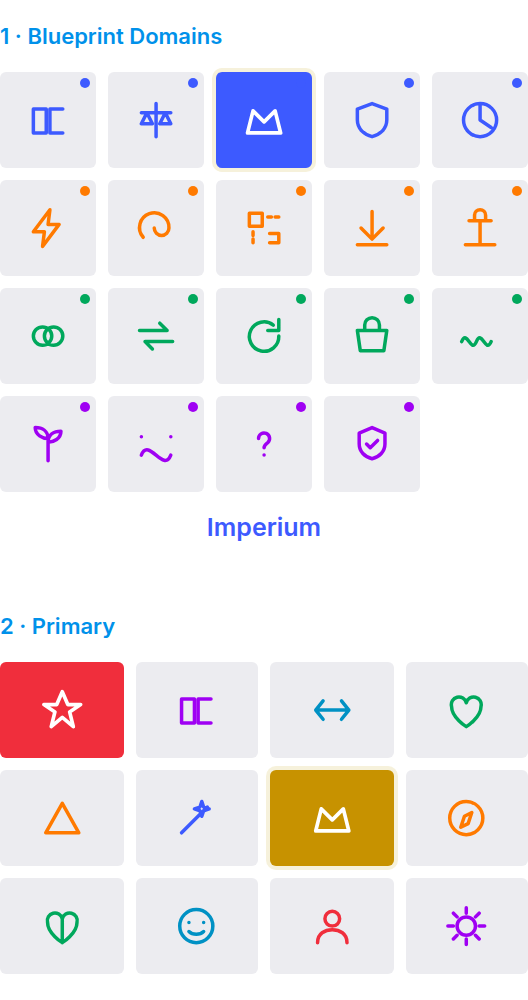
| Weakest icon contrast, option B | Shipped | B | B, seats | Floor 3.0 |
|---|---|---|---|---|
| Dark | 4.18 | 6.20 | 4.87 | holds |
| Snow | 1.34 | 4.07 | 4.07 | fixed |
| Punch | 4.87 | 5.46 | 4.29 | holds |
| Glass, approximate over the moving ground | 3.36 | 4.52 | 3.56 | holds |
| Glass white | 1.59 | 5.14 | 5.14 | fixed |
| Flat | 4.17 | 6.16 | 4.85 | holds |
| Lumen | 1.54 | 2.22 | 2.22 | his palette, question 4 |
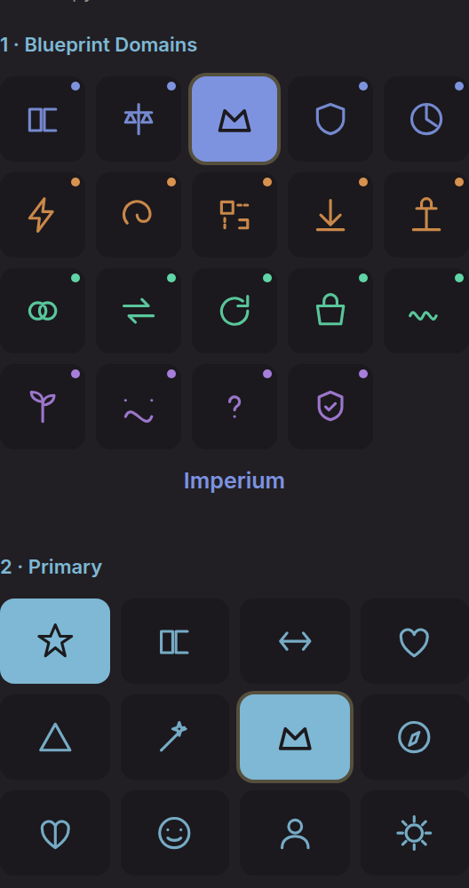
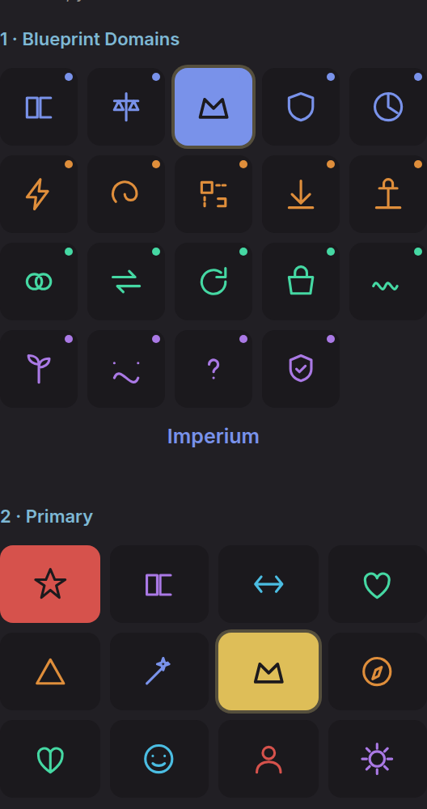
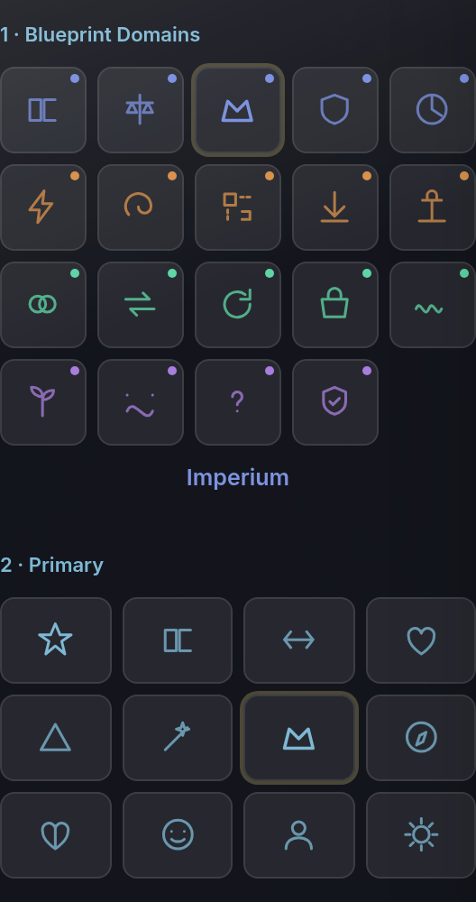
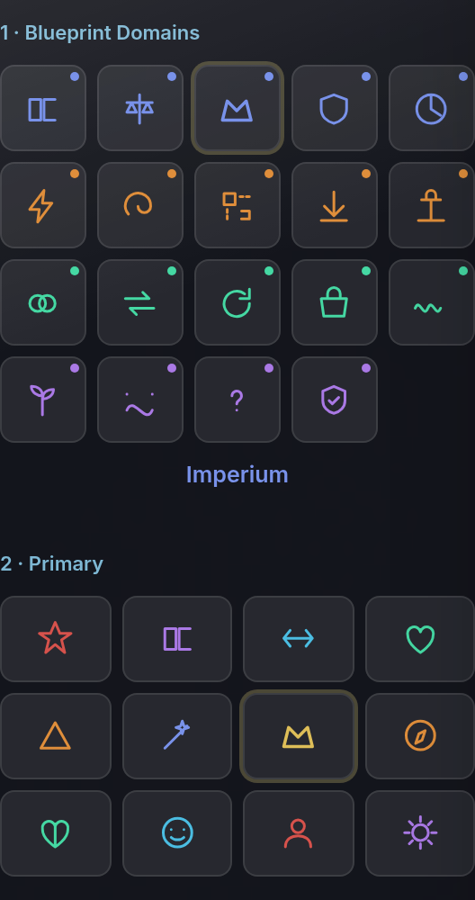
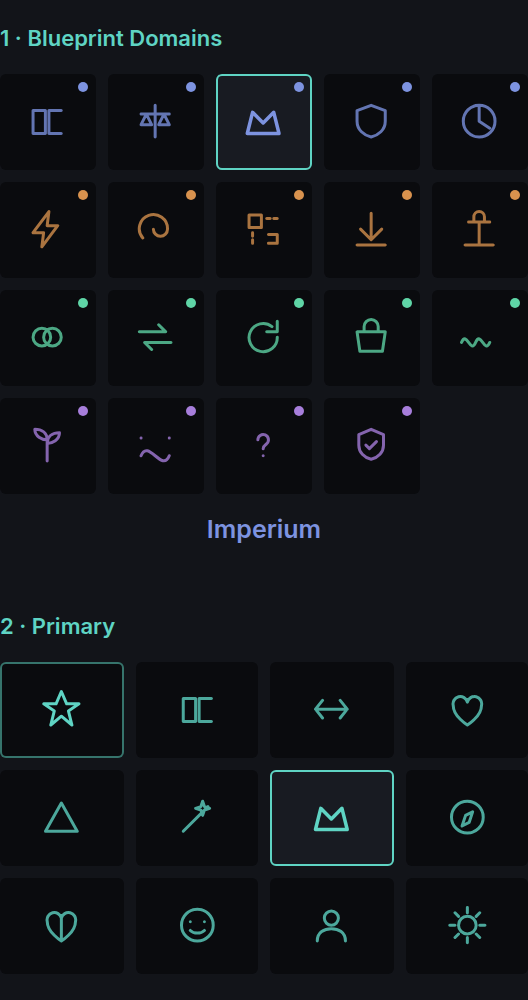
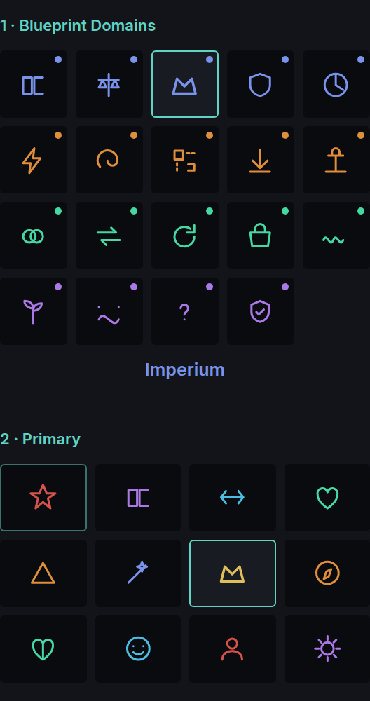
#F02E3C, is already the closest colour in the product to the alarm, at 0.037. On Lumen a selected Warrior fills solid in that red.